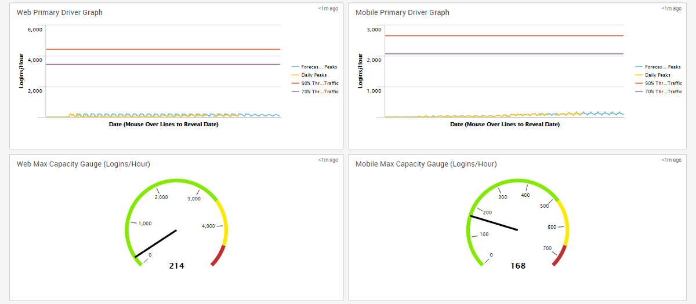
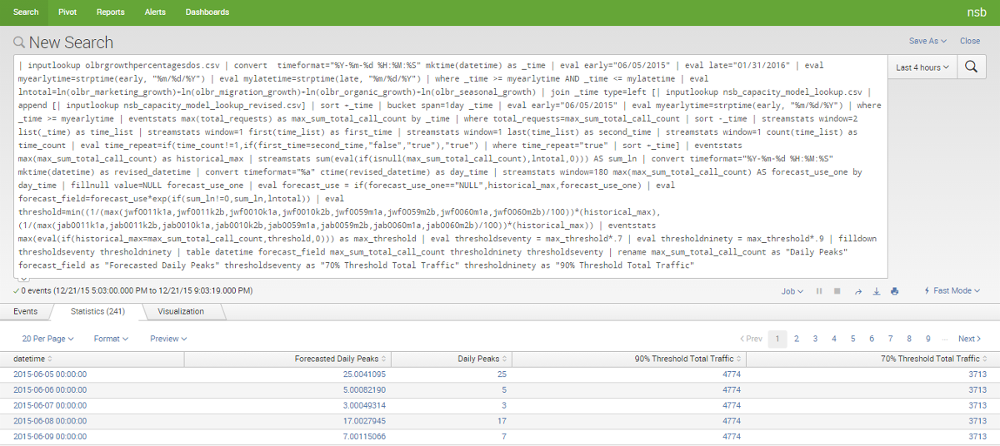
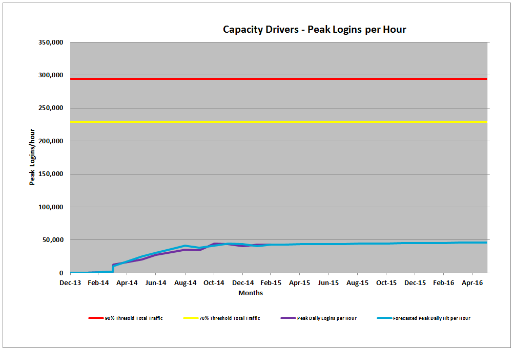
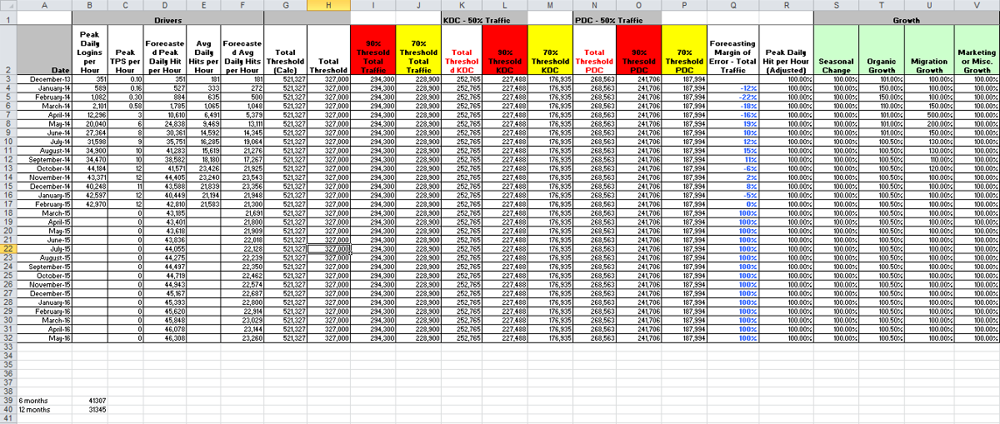

Colloborated with teams to create real-time big data dashboards using a machine-generated big data tool.
Dates: January 2015 - September 2015
Team: Scott Dombkowski
My last team at Capital One was responsible for capacity modeling throughout the Retail Bank line of business. After joining the team, I was put in charge of these capacity models. Before assuming responsibility, capacity models were done in Excel on a monthly basis with limited data points. Once I became familiar with Splunk, I saw an opportunity to automate this process. While Splunk was not designed with data modeling in mind, I was able to modify different functionalities within the tool so that I could automate capacity models throughout the Retail Bank LOB. The Splunk capacity models allowed leadership and platform teams to see how much traffic their platform was getting, how much of that traffic was from the web or mobile application, how much traffic a specific platform can handle, forecasts of future traffic, and more. Over the course of the year I was working on these capacity models, I increased the number of platforms that had capacity modeling from 2 to 8.
The new and improved capacity models had thousands of data points that provided more accurate data and projections. The revised capacity models could also be run ad-hoc versus once a month. Unlike the Excel capacity models that took half a day to a day to complete, the new Splunk capacity models ran automatically in a matter of seconds.
Responsibilities
- Understood the existing Retail Bank capacity model. Talking to stakeholders to understand platforms and the available data.
- Developed potential versions of a Splunk capacity model to present to stakeholders for feedback.
- Designed a final Splunk capacity model for one platform and then using it as a model for additional platforms.
- Presented the model to various platform teams to increase their familiarity and knowledge of the new models.
Splunk Capacity Model

Splunk Capacity Model

Splunk Capacity Model Search

Excel Capacity Model Chart

Excel Capacity Model Table